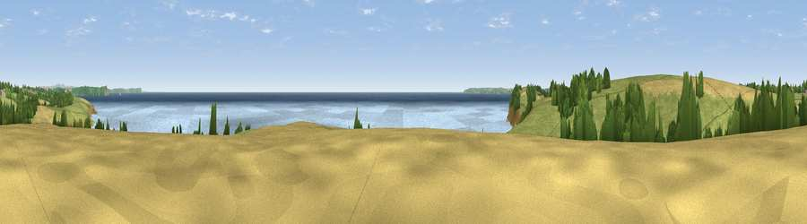

Viewpoint near Bohortha
#5954 in England · top 12% of its area beats it · near BohorthaWhere it is
The exact computed spot (SW 86675 32388). Click the marker for map links.
The view, rendered

A 360° render of this exact spot computed from the terrain model, tree cover and land cover — summer colours, afternoon light, calibrated against photographs of famous viewpoints. Real trees, hedges and buildings will differ in detail.
The panorama
Grey silhouette: terrain skyline in each direction (720 bearings, Earth curvature and refraction included). Dashed green: skyline with trees (+15 m) and buildings (+8 m) as obstacles. Blue strip: how far the ground is visible on each bearing.
Where the view opens
Wedge length = distance to the farthest visible ground on that bearing (vegetation-aware). Rings at 10, 25 and 50 km.
What fills the view
44% water · 39% grassland · 11% cropland · 5% woodland
Angular shares of the visible panorama (visual magnitude), not map area. Landscape diversity 0.50 (0–1 Shannon).
Key numbers
More beautiful places nearby
The staircase of upgrades: each row has a higher view potential than everything closer. Driving times are estimates from straight-line distance, calibrated against real road routing — check an actual route before setting out.
| Place | Direction | Drive | Score |
|---|---|---|---|
| Viewpoint near Bohortha | WNW · 1 km | ~2 min | 71.4 |
| Drake's Downs | SW · 2 km | ~5 min | 71.9 |
| Viewpoint near Porthoustock | SSW · 12 km | ~23 min | 74.0 |
| Viewpoint near Portloe | NE · 13 km | ~24 min | 74.4 |
| Viewpoint near Lanner | WNW · 17 km | ~30 min | 74.5 |
| Viewpoint near Gorran Haven | NE · 18 km | ~31 min | 77.0 |
| Carn Brea | WNW · 20 km | ~34 min | 81.1 |
| St Agnes Beacon | NW · 24 km | ~39 min | 86.1 |
50.15308, -4.98760 · source: screening · position refined by local search. Computed location — check access rights before visiting.